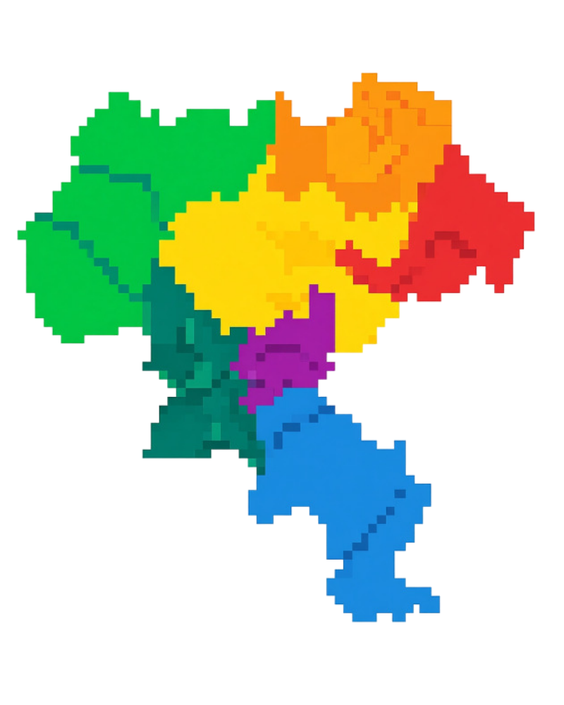
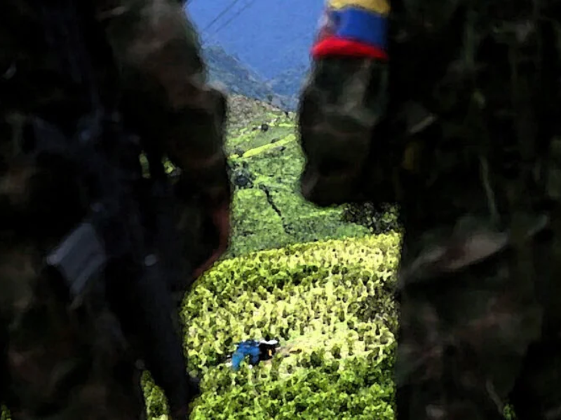

Municipios
Localización geográfica y contexto territorial de cada evento registrado.
Sistema multiagente · Cauca, Colombia
Escribe una consulta en lenguaje natural y obtén un informe estructurado sobre eventos relevantes del departamento: actores, municipios, fechas, afectaciones y contexto geopolítico.

Cobertura del sistema
El sistema extrae y conecta en un grafo de conocimiento las entidades clave de cada hecho documentado en el departamento del Cauca.
Localización geográfica y contexto territorial de cada evento registrado.
Instituciones, grupos y personas involucradas en los hechos documentados.
Líneas de tiempo de eventos con contexto histórico y frecuencia de ocurrencia.
Tipo de impacto, magnitud y población o infraestructura afectada.
Conexiones entre entidades en el grafo de conocimiento Neo4j.
Clasificación del evento: orden público, desastre, social, político u otro.
Arquitectura multiagente
Cada agente tiene un rol especializado e irremplazable. Trabajan en secuencia: el anterior alimenta al siguiente. Pasa el cursor sobre cada tarjeta.

Justificación
Los hechos relevantes del Cauca están dispersos en múltiples fuentes, formatos y fechas. Consolidarlos manualmente toma horas y produce análisis incompletos. Este sistema centraliza la información en un grafo y la hace consultable en segundos con lenguaje natural.
Un grafo de conocimiento permite descubrir conexiones entre eventos, actores y territorios que no son visibles en fuentes lineales.
Lo que tarda horas en revisión manual, el sistema lo entrega como informe estructurado en menos de un minuto.
Escribe en lenguaje natural. El sistema interpreta, consulta el grafo y genera un informe estructurado en segundos.
Abrir el sistema